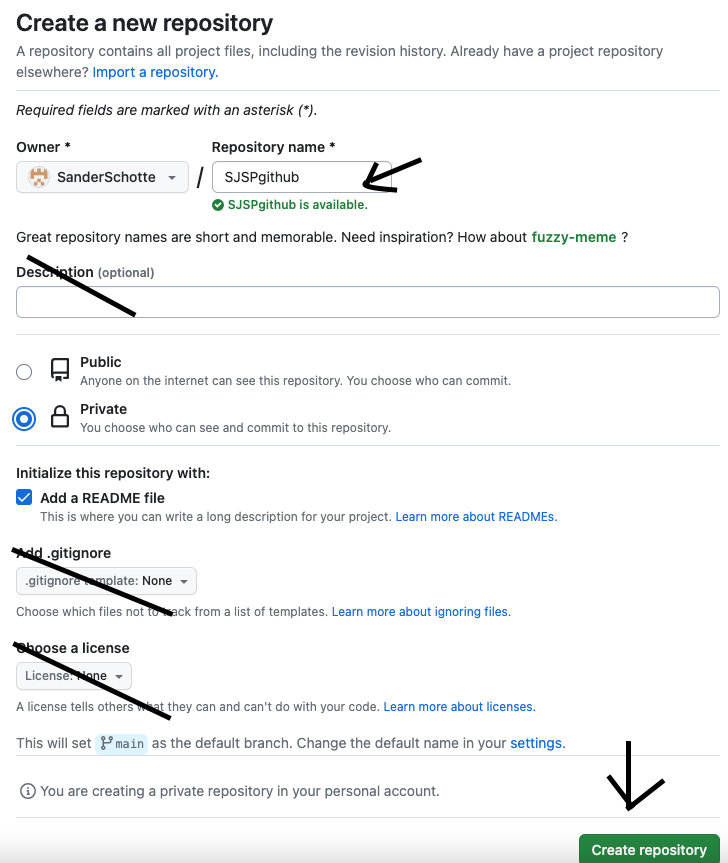

2. Instellen van de Repository

Bij de instellingen, ga je eerst naar de "Repository Name', kies een memorable naam die je kan herinneren. Sla de descriptie over of schrijf er iets nuttig in. Zet je repository op Private omdat je hier het meeste van je schoolwerk doet. Voeg een README file toe, sla de license en .gitignore over. En gefelicticeerd, je hebt je eerste Repository ooit!